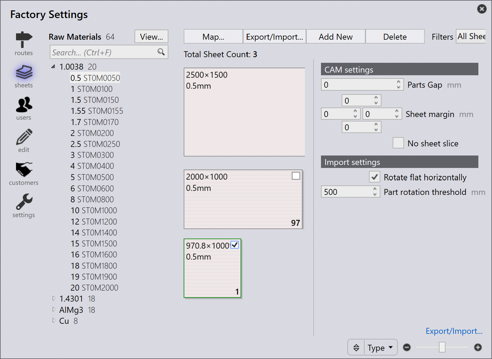

自動餘料管理
啟用餘料
TruSmartCAM 支援在 nesting 期間從 layout 自動建立餘料板材。 此功能僅適用於 TecZone Laser 機床。
-
按一下 factory → Machines → Machine Defaults → Skeleton cuts。
-
選取 Slice Sheet Skeleton 及 Create Remainder Sheet 選項以啟用 此功能。
啟用後，nested 板材的剩餘區域會根據 X 和 Y 中所分配的最小剩餘 板材值切割成剩餘板材。

設定自動餘料
-
按一下 factory → Settings → Job。
-
選取 Update sheet inventory on nest (un)release 和 Automate remnant inventory management。

自動餘料
當您 nest 零件時，如果剩餘的板材區域符合最小板材值 X 和 Y，TruSmartCAM 會自動從剩餘空間建立餘料板材。
-
在 Job Nest 檢視中，具有餘料板材的 nest 會以綠色 邊框輪廓和灰色背景顯示。

-
連按兩下 nest 可開啟 Nest 詳細資料頁面。餘料板材資訊 會以餘料板材尺寸、數量和面積顯示。
-
在 nest 上按一下滑鼠右鍵，選取 Edit 以在 TecZone 中開啟。nest 會顯示 零件之間的切割線和骨架切割線，以及雕刻的餘料 尺寸（材料、厚度和餘料尺寸）。
餘料尺寸雕刻標記可協助操作員無需測量即可拿取板材， 使其在未來的 nest 中更容易使用。
當您按一下 Mark Complete 時，餘料板材會 以綠色勾選標記顯示，表示 nest 已完成。部分 陰影的方形圖示表示餘料板材已建立並 在板材庫存中更新。

板材資料庫會更新餘料板材的尺寸和數量，並以板材尺寸末端 的星號（*）符號識別。餘料 板材具有綠色邊框。

job 的自動規劃或互動規劃會將餘料板材視為 nest 規劃中的高 優先順序，確保它們優先使用，以保持現場 無未使用的餘料。